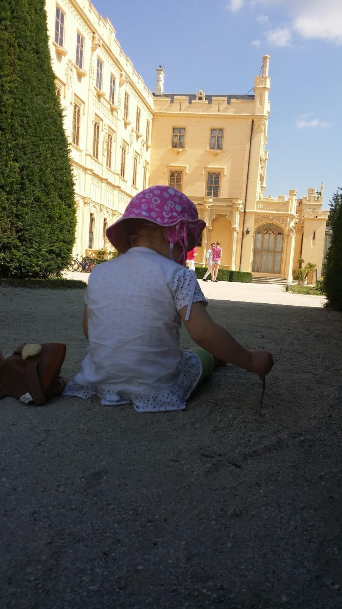
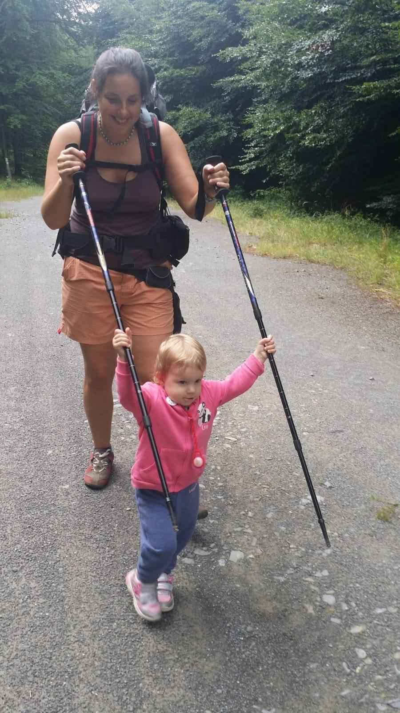
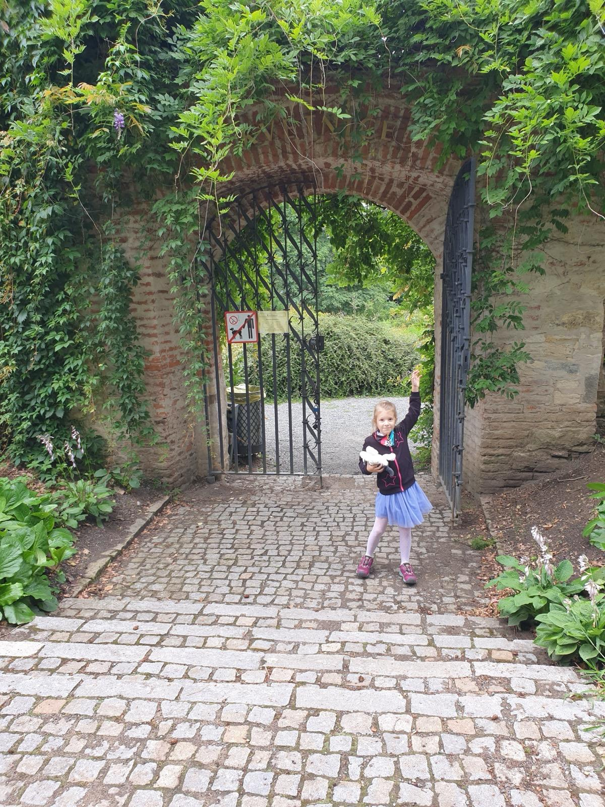

Costa Rica · 10. 6. 2025
Caribe vs. Pacífico – playas Kostariky

Costa Rica tiene dos ritmos. El Caribe es relajado, tropical y musical; el Pacífico es más activo y potente por sus olas.
Costa Caribe
Punta Uva, Manzanillo y Puerto Viejo son excelentes para snorkel suave, naturaleza y ambiente local auténtico.
- Punta Uva - arena clara, agua tranquila y arrecifes para snorkel
- Manzanillo - reserva natural ideal para calma y selva
- Puerto Viejo de Talamanca - ambiente bohemio y cultura afrocaribeña

Costa Pacífica
En el Pacífico encuentras surf, playas amplias y más variedad de infraestructura turística.
- Playa Tamarindo (Guanacaste) - destino surfero con escuelas de surf
- Playa Conchal - agua clara y playa ideal para nadar
- Playa Negra - arena oscura y olas fuertes, mejor para surfistas con experiencia
- Manuel Antonio – národní park s pláží, kde potkáte opice a leguány
- Costa Ballena (Uvita) - playas y avistamiento de ballenas en temporada
- Playa Ostional – místo pro pozorování hromadného kladení želv
- Playa Cativo - acceso más remoto, naturaleza intacta
- Santa Teresa - surf, yoga y ambiente internacional
Praktické rady pro plážové dobrodružství
- Las corrientes de retorno son comunes en el Pacífico: mantén calma y nada en paralelo a la costa
- Reserva con antelación entradas a parques como Manuel Antonio (SINAC)
- El Caribe suele tener más lluvia anual; el Pacífico concentra estación seca entre noviembre y abril
Si buscas playas menos masificadas, te ayudo a elegir rutas fuera de lo típico.

Quieres conocer las playas de Costa Rica en persona?
Inclúyelas en tu itinerario y te preparo una ruta a medida.
Escribir a Martin